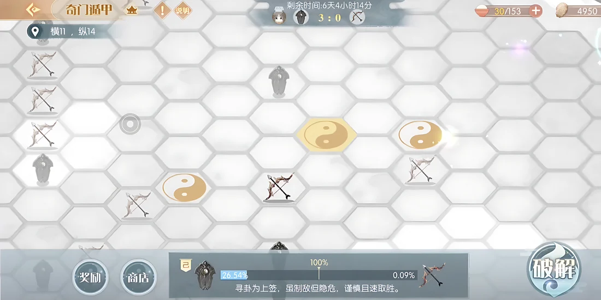

A server-wide faction event built on one question: how do tens of thousands of players, who never take turns and never talk to each other, play one game of five-in-a-row (Gomoku) together?
Five-in-a-row is a two-player, turn-based game. The event needed a whole server to play one game together, with no turns and no chat.
The faction rules, node capture by shared progress, the win and draw conditions, and a limited marker system for coordination. I led the event's design.
The event ran live on one shared board for an entire server, with tens of thousands of players.
The idea is simple to describe: two factions compete on one board, and five in a row wins. Building it meant replacing almost everything that makes five-in-a-row work.
Five-in-a-row is easy to follow because it is small. Two people alternate. Each move is one hand placing one stone. Both players are present for the whole game and can see every threat as it forms.
Tens of thousands of players share the board. They log in at different hours, play in their own sessions, and have no shared turn. Most will never speak to each other. No single player can be the one who makes the move.
Keep the tension of the board game (lines forming, lines blocked, one node away from winning) while removing everything it depends on: two players, alternating turns, and one hand placing each stone.
I split the game into two layers. Players act alone, in their own time. Factions compete together, on a board everyone can see. Each node's progress bar connects the two layers.
Each player casts a hexagram and is placed in one of two factions at random. Players cannot choose a side.
The player clears a challenge level in their own session. Clearing it adds progress to a node on the shared board.
Both factions can push the same node at the same time. The first to fill it claims it for the round.
Five claimed nodes in a straight line win the round. The winner scores and a new round begins.
Each of these is enforced by the system. None of them depends on players behaving a certain way.
If players could pick a faction, most would join their friends or the side that looked stronger, and the two sides would become uneven. Random assignment prevents that. It also fits the theme of the event: the hexagram decides your side for you.
Everything a player does happens inside their own challenge level. Nothing they do is aimed at another person, and nothing another person does can interrupt them. The competition happens only on the board. Whether a player follows the faction contest closely or ignores it, every challenge they complete counts the same.
When two large factions keep blocking each other, the board can reach a state where no line of five is possible. In a two-player game, the players would agree to a draw. Here the system has to do it. When neither faction can still complete five in a row, the round ends in a draw and the board resets. Players are never left in a round that cannot be won.
To make a line of five, a faction has to agree on which five nodes. Thousands of players each choosing a node on their own will spread their effort across the board and complete very little. The faction needed a way to focus.
Faction B is one node from five. Faction A's effort is spread out, and the node it needs to block is only one of many half-filled nodes.
A commander marks the node that needs blocking. The faction sees the marker, focuses on that node, and claims it before Faction B completes its line.
Each faction's three highest contributors of the day become its commanders.
A commander can place a marker on a node. Everyone in the faction sees it.
Markers are limited. A commander cannot mark every node, so each marker matters.
A marker is only a suggestion. Players are free to ignore it, and their progress counts on any node.
The marker is the simplest tool I could find that lets a very large group make one deliberate move, without chat, without turns, and without needing players to be online at the same time.

The event screen during a round. Top center: the two factions' round score (3 : 0) and the event countdown. Bottom: the selected node's progress race, one faction at 26.54% and the other at 0.09%, with the 100% claim line between them. The 破解 ("Break") button on the right is how a player joins that race.
With two players, a move is one decision. With tens of thousands, a move is the sum of many small contributions. Designing how those contributions add up (here, the node's progress bar) mattered more than any rule about the board itself.
Playing alone but scoring together gave the event real competition without direct conflict. No player could be targeted, and every player contributed.
The useful question was not "how do we let players talk?" but "how little signaling is enough?" A few earned, rotating signals did more than an open chat would have.
Any contested board can get stuck. Because the draw-and-reset rule was part of the system, the worst case was a new round, not an event that stopped working.